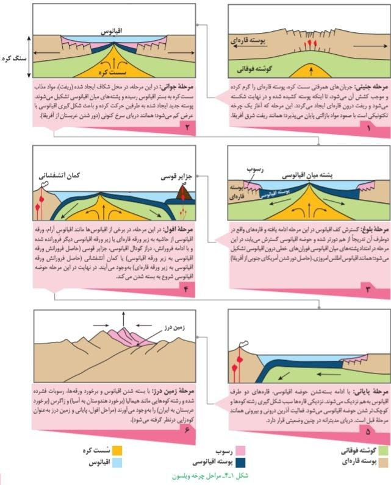

چرخه ویلسون:
یه آقایی به نام توزو ویلسون در سال ۱۹۶۸ میلادی چرخهای برای تکامل اقیانوسها پیشنهاد داد و به نام خودش ثبت کرد.

مراحل ۶گانه چرخه ویلسون:
۱. مرحله بازشدگی: بر اثر صعود جریانهای سستکره، پوسته قارهای کشیده و شکسته شده و کافت قارهای ایجاد میشود. مثل دریای سرخ.
۲. مرحله اقیانوس جوان: با ادامه بازشدگی، پوسته قارهای شکافته شده و ماگما فوران میکند و پوسته اقیانوسی جدید ساخته میشود.
۳. مرحله اقیانوس بالغ: با گسترش بستر اقیانوس، حوضه اقیانوسی وسیعی ایجاد میشود مثل اقیانوس اطلس.
۴. مرحله افول: ورقه اقیانوسی شروع به فرورانش میکند و حوضه اقیانوسی شروع به بسته شدن میکند مثل اقیانوس آرام.
۵. مرحله پایانی: قارههای دو طرف به هم نزدیک شده و حوضه اقیانوسی خیلی کوچک میشود مثل دریای مدیترانه.
۶. مرحله زمیندرز: با برخورد دو ورقه قارهای، رشتهکوه ایجاد میشود مثل رشتهکوه هیمالیا یا البرز.
مراحل تصویری چرخه
